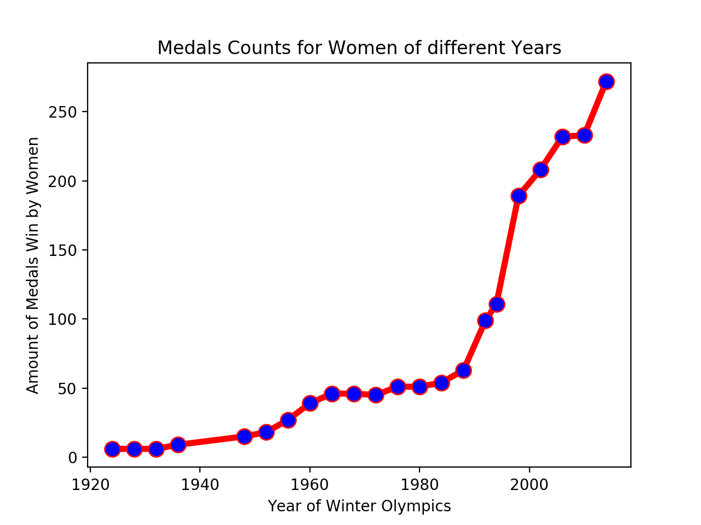

Medal counts for women of different years
The number of female athletes who win the metals continued to grow at a high rate.
Women VS Men
The number of female athletes who win the metals continued to grow at a high rate.

Number of Medals Won By Women are close to Men at the End
The participation of female athletes reached its highest point during the most recent Olympiad (Sochi 2014), in which slightly more than 44% of Olympians were women.